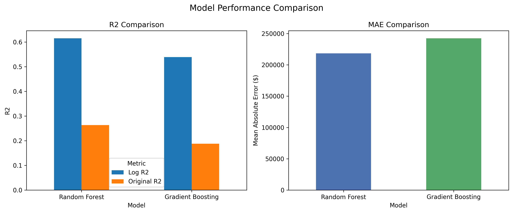

Professional Profile
I am a data analytics graduate student with a background in finance, business operations, and customer service. My work focuses on using data to solve business problems, build dashboards, create visualizations, and develop machine learning models.
I enjoy working with Python, SQL, Tableau, and data storytelling to turn raw data into useful insights. My goal is to combine technical analysis with business understanding to support better decision-making.
Analytics Projects
Applied work in machine learning, dashboarding, and exploratory analysis.
Data Visualization
Clear storytelling through dashboards, charts, and interactive visualizations.
Business Context
Analytics grounded in finance, operations, and customer-facing problem solving.
Skills
Programming and Data Tools
Analytics Capabilities
Education
Technical training in Python, SQL, visualization, and applied analytics workflows.
Coursework supporting operations awareness, process thinking, and business systems understanding.
Experience
Finance, Operations, and Customer Support Background
My professional experience includes work in financial services, business operations, and customer support environments where accuracy, communication, and problem resolution were essential. I supported account-related processes, responded to customer needs, and worked within structured business workflows that required attention to detail and dependable execution.
That background now supports my analytics work by helping me frame technical projects around business questions, process improvement, and practical outcomes. I approach data problems with a focus on clarity, efficiency, and decision support.
Projects
BUSA 695 Real Estate Price Prediction Capstone
Built a machine learning workflow to predict residential real estate prices using a large U.S. real estate dataset. The project included data cleaning, feature engineering, location-based variables, Random Forest modeling, Gradient Boosting benchmarking, model evaluation charts, and an interactive Folium map.
Tools: Python, pandas, NumPy, scikit-learn, matplotlib, Folium, pgeocode, Jupyter Notebook
- Random Forest log-scale R: 0.6151
- Random Forest MAE: about $218,209
- Cross-validation mean R: 0.6241
- Gradient Boosting benchmark was lower than Random Forest


Other Projects
D3 Beast Mode Chart
Built an animated D3.js bar chart that reads CSV data, maps values to color and position scales, and adds hover interactions with tooltip feedback.
Tools: JavaScript, D3.js, HTML, CSS, CSV
- Loaded structured data from a CSV file and converted values for chart rendering.
- Used animated bar transitions to introduce the dataset progressively.
- Added tooltips and hover effects to improve chart readability and interaction.
Belly Button Biodiversity Dashboard
Built an interactive dashboard to explore belly button microbiome data at the sample level using dynamic charts and demographic detail views.
Tools: JavaScript, D3.js, Plotly, HTML, CSS
- Created a dashboard view for biodiversity sample exploration.
- Used a bubble chart to compare bacterial cultures across samples.
- Combined visual storytelling with interactive filtering and metadata display.


Mortgage Application Success Prediction
Built a machine learning application that predicts mortgage approval outcomes through a web interface where users can enter application details and receive a model-driven decision result.
Tools: Python, Flask, scikit-learn, pandas, NumPy, Joblib, HTML, CSS, Bootstrap
- Connected a trained model to a Flask app for interactive prediction use.
- Added preprocessing support with saved scaler and imputer components.
- Created approval and denial result pages to make outputs easier to interpret.